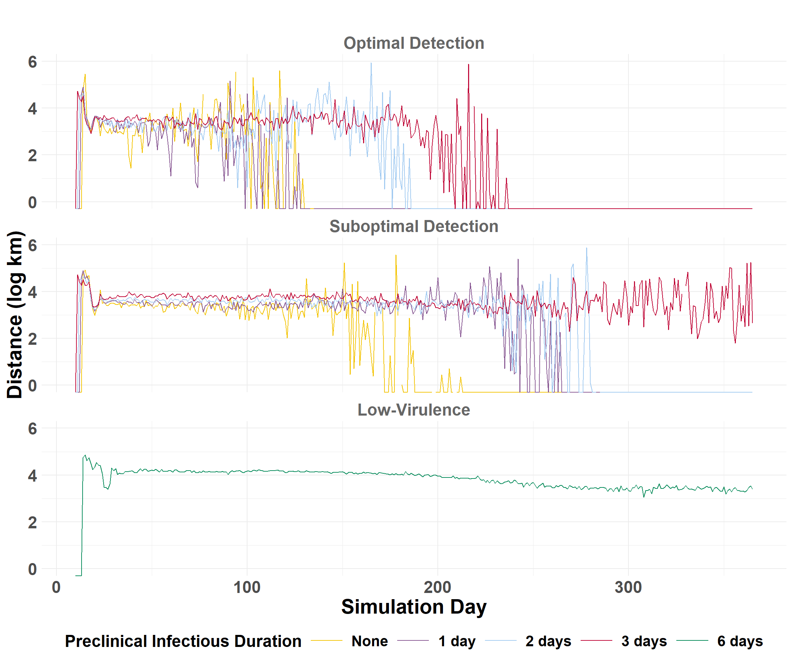

Calculate transmission metrics to estimate epidemic potential, velocity, and spread
Effective Reproduction
The Effective Reproduction Number (Re) is the average number of secondary premises infected by a source per day. Re is used to estimate epidemic potential.
Code
## exclude index cases (source_farm == 0)transmissions <- merge %>%filter(source_farm !=0)## Count the number of transmissions per source farm for each iteration on each infect_dayiteration_Re <- transmissions %>%group_by(region, scenario_type, preclinical, iteration, infect_day, source_farm) %>%summarize(num_transmissions =n(), .groups ="drop") ## Filter to regionsiteration_Re_western <- iteration_Re %>%filter(region =="western")iteration_Re_central <- iteration_Re %>%filter(region =="central")iteration_Re_eastern <- iteration_Re %>%filter(region =="eastern")
View example of daily iteration_Re
Code
## Filter to scenario to displayiteration_Re_central_select <- iteration_Re_central %>%filter(scenario_type =="suboptimal") %>%filter(preclinical =="2")## Select and order columns to displayiteration_Re_central_select <- iteration_Re_central_select[c("iteration", "infect_day", "source_farm", "num_transmissions")]head(iteration_Re_central_select)
iteration
infect_day
source_farm
num_transmissions
1
14
788420
3
1
15
788420
4
1
16
788088
1
1
16
788420
1
1
17
788088
2
1
19
788420
1
Daily Summaries
Calculate daily summaries for each region.
Code
## Western U.S.daily_Re_western <-calculate_daily_Re(iteration_Re_western)## Central U.S.daily_Re_central <-calculate_daily_Re(iteration_Re_central)## Eastern U.S.daily_Re_eastern <-calculate_daily_Re(iteration_Re_eastern)
Significance Testing
Perform significance testing on optimal and suboptimal detection scenarios.
The epidemic velocity is the distance (km) of spread per day. The epidemic velocity is estimated by first calculating the daily spread distances.
Calculate Daily Distances
compile_daily_summary() calculates distances (km) between source farms and those infected for each iteration, then calculates the percentiles by day across all iterations to get the average statistics.
## Get quantiles to compare scenariosdaily_central <- daily_summary_central$combined_summary## Plot epidemic velocitycentral_velocity_plot <-plot_wave_velocity(daily_central)central_velocity_plot

Code
## Get quantiles to compare scenariosdaily_eastern <- daily_summary_eastern$combined_summary## Plot epidemic velocityeastern_velocity_plot <-plot_wave_velocity(daily_eastern)eastern_velocity_plot
Iteration Metrics
Compare scenarios by looking for patterns at the level of individual iterations. iteration_metrics() will use the daily_distances output to look at trends between optimal and suboptimal responses.
The function returns iteration specific metrics:
auc_log
The amount of area (total) under the plotted line (distance x day) above on a log scale, i.e., the Area Under Curve (AUC). This represents the total distance covered during the outbreak`s spread (on the log scale).
peak_spread
The maximum distance spread in any one day (log scale).
peak_day
The infect day that the maximum spread distance (peak_spread) occurred.
## Filter data to scenarioiteration_metrics_central_select <- iteration_metrics_central %>%filter(scenario_type =="Suboptimal Detection") %>%filter(preclinical =="3")## Select and order columns to displayiteration_metrics_central_select <- iteration_metrics_central_select[c("iteration", "auc_log", "peak_spread", "peak_day")]head(iteration_metrics_central_select)
iteration
auc_log
peak_spread
peak_day
1
770.6477
6.177126
64
2
502.7660
5.571266
49
3
100.8983
4.881051
17
4
355.1653
6.656522
62
5
726.0179
6.111867
18
6
182.3753
5.375928
43
Cumulative Spread
Drop the low-virulence scenarios to compare optimal and suboptimal detection scenarios. auc_log represents the total cumulative spread distance, for each scenario by iteration, on a log scale.
## Drop the low-virulence scenarioiteration_metrics_no_low_western <- iteration_metrics_western %>%filter(scenario_type !="Low-Virulence")## Plot AUCggplot(iteration_metrics_no_low_western, aes(x = preclinical, y = auc_log, color = scenario_type)) +geom_point(shape=1, alpha =0.3, size =2) +# individual iterationsgeom_smooth(method ="lm", se =FALSE, linewidth=1.2) +# trendylim(0, 1500) +facet_grid(. ~ scenario_type) +scale_color_manual(values =c("Suboptimal Detection"="#74add1", "Optimal Detection"="orange2")) +labs(x ="Preclinical Infectious Duration (days)",y ="Cumulative Spread (log AUC)",title =" " ) +theme_minimal() +theme(plot.margin =unit(c(0.25, 0.25, 0.25, 0.25), "cm"),legend.position ="none",strip.text =element_text(size =18, face ="bold", color ="gray40"),axis.title.x =element_text(size =22, face ="bold"),axis.title.y =element_text(size =22, face ="bold"),axis.text.x =element_text(size =18, face ="bold"),axis.text.y =element_text(size =18, face ="bold"),plot.title =element_text(size =22, face ="bold", hjust =0.5) )
Code
## Drop the low-virulence scenarioiteration_metrics_no_low_central <- iteration_metrics_central %>%filter(scenario_type !="Low-Virulence")## Plot AUCggplot(iteration_metrics_no_low_central, aes(x = preclinical, y = auc_log, color = scenario_type)) +geom_point(shape=1, alpha =0.3, size =2) +# individual iterationsgeom_smooth(method ="lm", se =FALSE, linewidth=1.2) +# trendylim(0, 1500) +facet_grid(. ~ scenario_type) +scale_color_manual(values =c("Suboptimal Detection"="#74add1", "Optimal Detection"="orange2")) +labs(x ="Preclinical Infectious Duration (days)",y ="Cumulative Spread (log AUC)",title =" " ) +theme_minimal() +theme(plot.margin =unit(c(0.25, 0.25, 0.25, 0.25), "cm"),legend.position ="none",strip.text =element_text(size =18, face ="bold", color ="gray40"),axis.title.x =element_text(size =22, face ="bold"),axis.title.y =element_text(size =22, face ="bold"),axis.text.x =element_text(size =18, face ="bold"),axis.text.y =element_text(size =18, face ="bold"),plot.title =element_text(size =22, face ="bold", hjust =0.5) )
Code
## Drop the low-virulence scenarioiteration_metrics_no_low_eastern <- iteration_metrics_eastern %>%filter(scenario_type !="Low-Virulence")## Plot AUCggplot(iteration_metrics_no_low_eastern, aes(x = preclinical, y = auc_log, color = scenario_type)) +geom_point(shape=1, alpha =0.3, size =2) +# individual iterationsgeom_smooth(method ="lm", se =FALSE, linewidth=1.2) +# trendylim(0, 1500) +facet_grid(. ~ scenario_type) +scale_color_manual(values =c("Suboptimal Detection"="#74add1", "Optimal Detection"="orange2")) +labs(x ="Preclinical Infectious Duration (days)",y ="Cumulative Spread (log AUC)",title =" " ) +theme_minimal() +theme(plot.margin =unit(c(0.25, 0.25, 0.25, 0.25), "cm"),legend.position ="none",strip.text =element_text(size =18, face ="bold", color ="gray40"),axis.title.x =element_text(size =22, face ="bold"),axis.title.y =element_text(size =22, face ="bold"),axis.text.x =element_text(size =18, face ="bold"),axis.text.y =element_text(size =18, face ="bold"),plot.title =element_text(size =22, face ="bold", hjust =0.5) )
Significance Test
Fit a linear model with an interaction term to quantify the influence of preclinical infectious duration (preclinical) and detection scenario (scenario_type) on cumulative outbreak spread (auc_log).
ggplot(iteration_metrics_no_low_western, aes(x = preclinical, y = peak_day, color = scenario_type)) +geom_point(shape=1, alpha =0.3, size =2) +# individual iterationsgeom_smooth(method ="lm", se =FALSE, linewidth=1.2) +ylim(0, 365) +facet_grid(. ~ scenario_type) +scale_color_manual(values =c("Suboptimal Detection"="#74add1", "Optimal Detection"="orange2")) +labs(x ="Preclinical Infectious Duration (days)",y ="Day of Peak Transmission",title =" " ) +theme_minimal() +theme(plot.margin =unit(c(0.25, 0.25, 0.25, 0.25), "cm"),legend.position ="none",strip.text =element_text(size =18, face ="bold", color ="gray40"),axis.title.x =element_text(size =22, face ="bold"),axis.title.y =element_text(size =22, face ="bold"),axis.text.x =element_text(size =18, face ="bold"),axis.text.y =element_text(size =18, face ="bold"),plot.title =element_text(size =22, face ="bold", hjust =0.5) )
Code
ggplot(iteration_metrics_no_low_central, aes(x = preclinical, y = peak_day, color = scenario_type)) +geom_point(shape=1, alpha =0.3, size =2) +# individual iterationsgeom_smooth(method ="lm", se =FALSE, linewidth=1.2) +ylim(0, 365) +facet_grid(. ~ scenario_type) +scale_color_manual(values =c("Suboptimal Detection"="#74add1", "Optimal Detection"="orange2")) +labs(x ="Preclinical Infectious Duration (days)",y ="Day of Peak Transmission",title =" " ) +theme_minimal() +theme(plot.margin =unit(c(0.25, 0.25, 0.25, 0.25), "cm"),legend.position ="none",strip.text =element_text(size =18, face ="bold", color ="gray40"),axis.title.x =element_text(size =22, face ="bold"),axis.title.y =element_text(size =22, face ="bold"),axis.text.x =element_text(size =18, face ="bold"),axis.text.y =element_text(size =18, face ="bold"),plot.title =element_text(size =22, face ="bold", hjust =0.5) )
Code
ggplot(iteration_metrics_no_low_eastern, aes(x = preclinical, y = peak_day, color = scenario_type)) +geom_point(shape=1, alpha =0.3, size =2) +# individual iterationsgeom_smooth(method ="lm", se =FALSE, linewidth=1.2) +ylim(0, 365) +facet_grid(. ~ scenario_type) +scale_color_manual(values =c("Suboptimal Detection"="#74add1", "Optimal Detection"="orange2")) +labs(x ="Preclinical Infectious Duration (days)",y ="Day of Peak Transmission",title =" " ) +theme_minimal() +theme(plot.margin =unit(c(0.25, 0.25, 0.25, 0.25), "cm"),legend.position ="none",strip.text =element_text(size =18, face ="bold", color ="gray40"),axis.title.x =element_text(size =22, face ="bold"),axis.title.y =element_text(size =22, face ="bold"),axis.text.x =element_text(size =18, face ="bold"),axis.text.y =element_text(size =18, face ="bold"),plot.title =element_text(size =22, face ="bold", hjust =0.5) )
Significance Test
Fit a linear model with an interaction term to quantify the influence of preclinical and scenario_type on the maximum spread rate and it’s (peak_day).